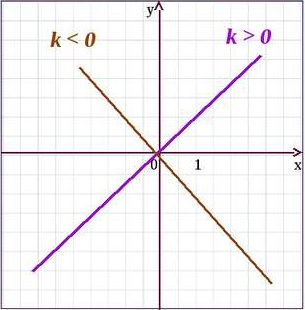

Пряма пропорційність
З курсу математики відомо, що дві величини називаються прямо пропорційними,
якщо із збільшенням (зменшенням) однієї з них у кілька разів у стільки ж разів
збільшується(зменшується) інша величина. Таке співвідношення між цими
величинами задається за допомогою формули k=у/х або у=kх. Отже, приймемо
наступне означення.
Означення: Функцією прямої пропорційності називається функція виду у=kх,
де k≠0 і kєR.
Одним із основних завдань щодо функцій є встановлення їх властивостей або
дослідження функцій. Як правило, дослідження функцій проводять за певним
планом, а саме:
1) встановлення області визначення функції;
2) виявлення проміжків монотонності (зростання і спадання) функції;
3) визначення парності чи непарності функції;
4) визначення особливих точок функції (точок розриву, екстремуму тощо) та характеру поведінки функції біля цих точок;
5) побудова графіка функції;
6) визначення множини значень функції.
Розглянемо властивості функції у=kх. Оскільки для знаходження значення у за відомим значенням х необхідно виконати дію множення, яка в множині дійсних чисел завжди існує, то областю визначення цієї функції буде множина дійсних чисел. Отже, D(kx)=R.
Для визначення проміжків монотонності функції виберемо два довільних значення аргументу х1 і х2 таких, що х1>х2. Якщо k>0, то kх1>kх2, тобто f(х1)>f(х2). Це означає, що при k>0 функція прямої пропорційності зростає на всій області визначення. Якщо k<0, то із нерівності х1 >х 2 випливає kх1 < kх2, тобто f(х1) < f(х2). Це означає, що при k<0 функція прямої пропорційності спадає на всій області визначення.
Для того, щоб визначити парною чи непарною є ця функція, відповідно до означення непарних функцій маємо: f(-х)=k(-x)= -kx= -f(х), тобто справедлива рівність f(-х)= -f(х). Це означає, що функція у=kх є непарною, а її графік повинен бути симетричним відносно початку координат. Розглядаючи рівняння прямих, ми встановили, що графіком функції у=kх є пряма лінія, яка проходить через початок координат і розміщена у першій та третій координатних кутах, якщо k>0, і в другій та четвертій чверті, якщо k<0. Особливих точок функція немає. Оскільки для кожного значення аргументу хєR, можна знайти відповідне йому значення функції уєR, то множиною значень функції у=kх є множина всіх дійсних чисел, тобто Е(kx)=R.
